19 calendar slots. 23 platform executions. Draft only until credentials and final approval are complete.
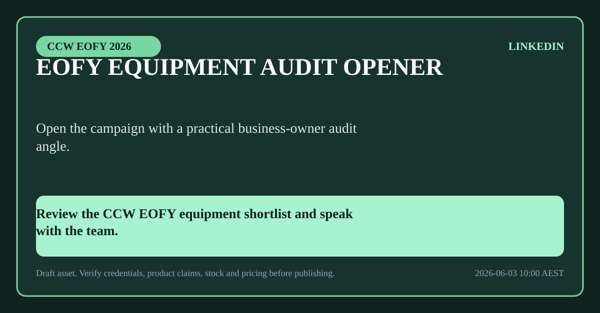
EOFY equipment audit opener
Linkedin 2026-06-03 10:00 AEST
EOFY planning is the right time to find the gear that is slowing down cleaning and restoration jobs. Audit extraction, drying, moisture checks, hoses, chemicals, and backups before buying anything new. CCW can help turn that audit into a practical equipment shortlist.
Review the CCW EOFY equipment shortlist and speak with the team.
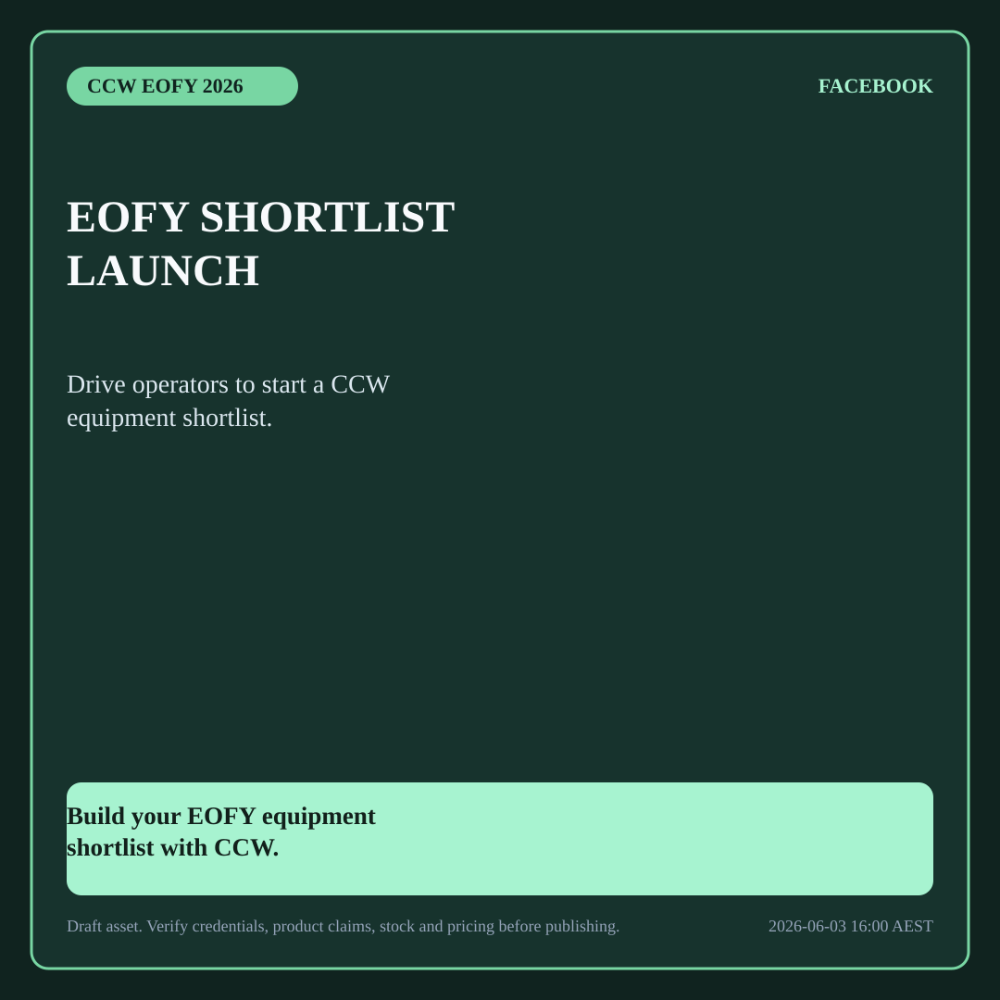
EOFY shortlist launch
Facebook 2026-06-03 16:00 AEST
EOFY is the practical time to tighten up the gear that makes every job smoother. Use this week to shortlist the machines, air movers, meters, hoses, chemicals, and accessories your team actually needs before June gets louder.
Build your EOFY equipment shortlist with CCW.
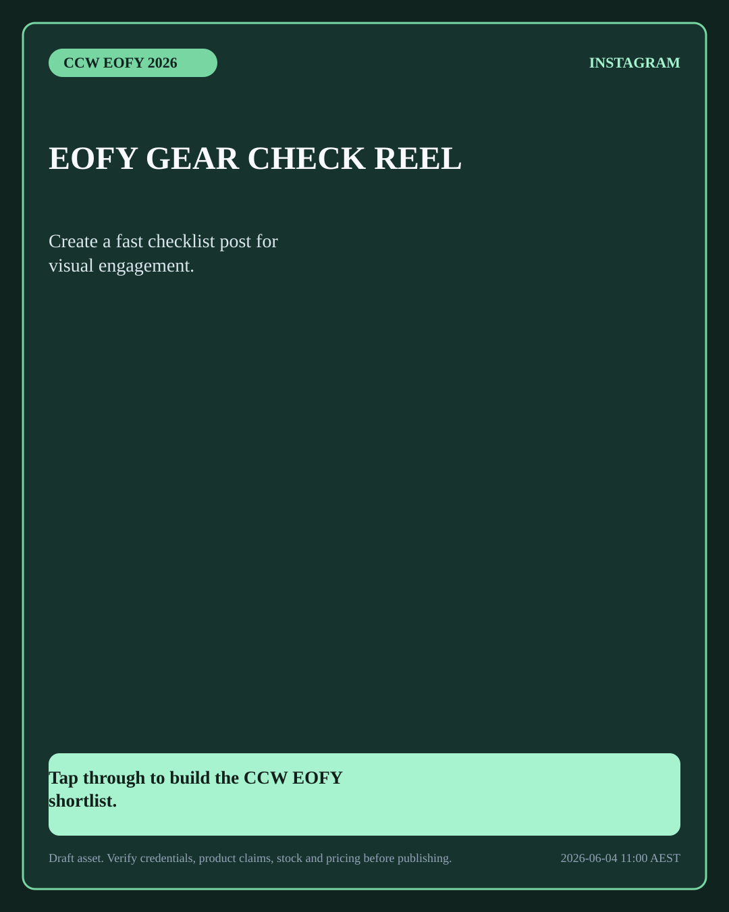
EOFY gear check reel
Instagram 2026-06-04 11:00 AEST
EOFY gear check: machines, dryers, meters, chemicals, hoses, and the job-site essentials that stop small problems becoming slow jobs. Save this and get the upgrade list moving before June disappears.
Tap through to build the CCW EOFY shortlist.
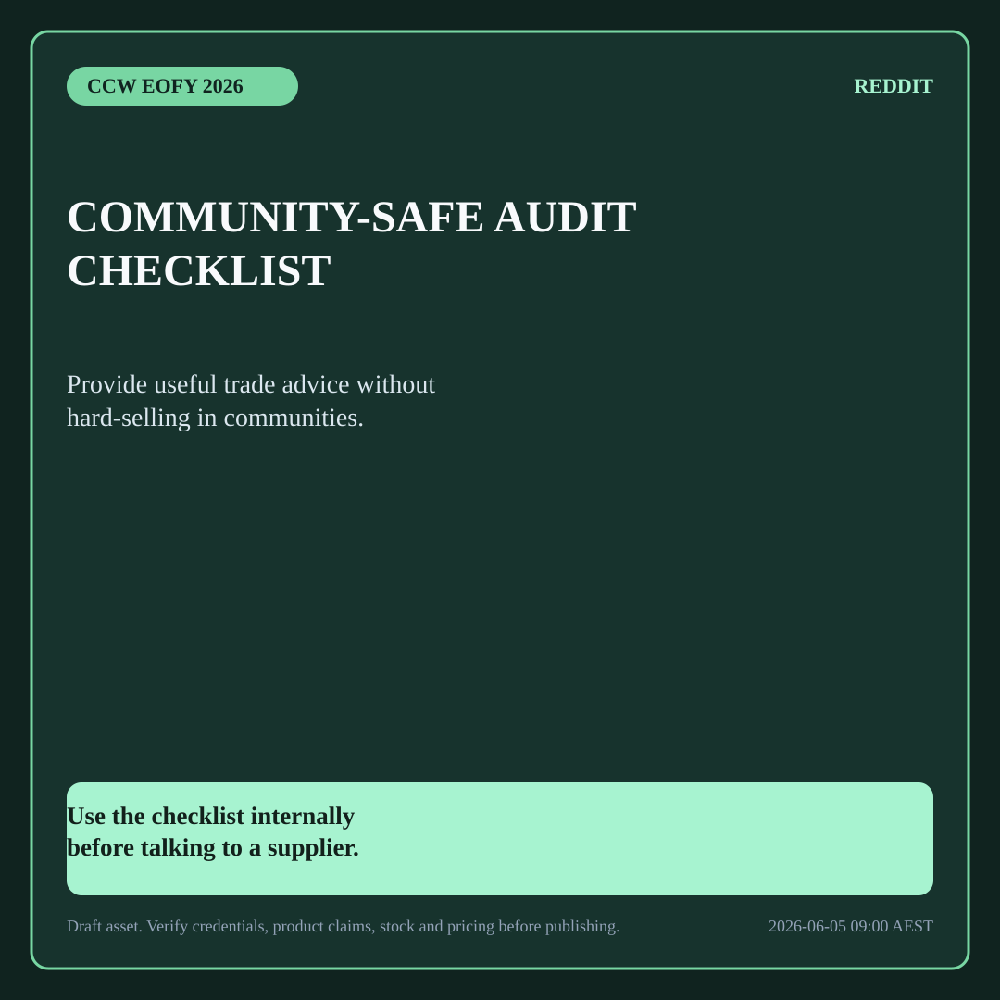
Community-safe audit checklist
Reddit 2026-06-05 09:00 AEST
For operators doing EOFY planning: audit the equipment that slows jobs down before buying anything new. Check extraction performance, drying coverage, moisture meters, hoses, wands, sprayers, and backup consumables. Buy only what removes a real operational bottleneck.
Use the checklist internally before talking to a supplier.
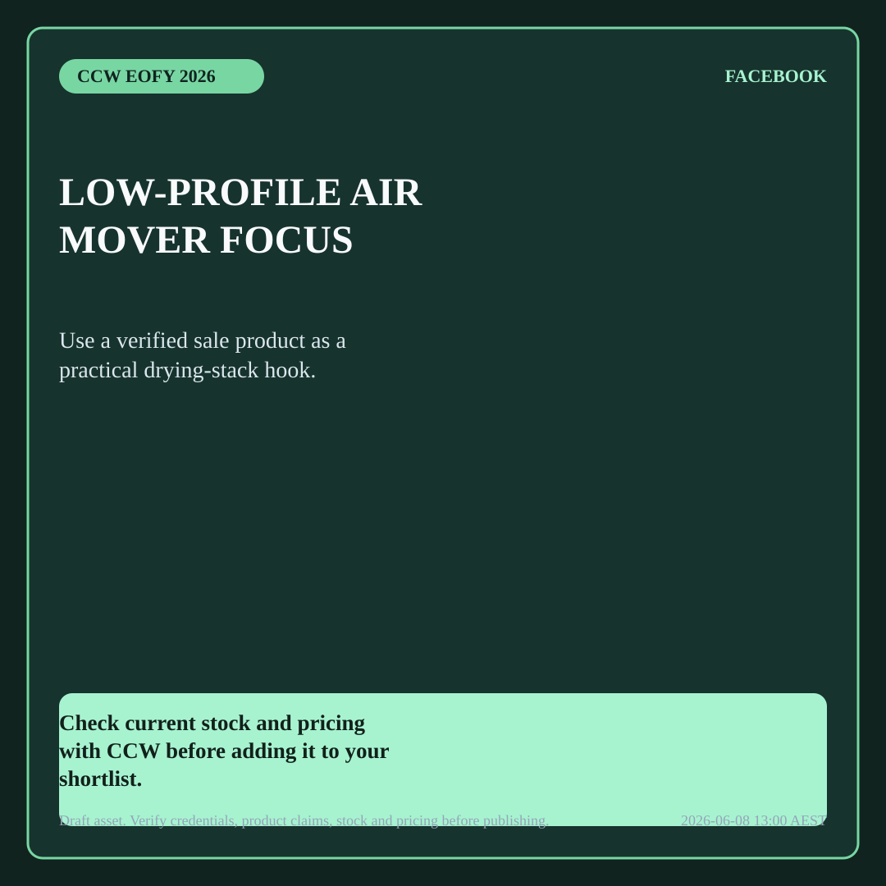
Low-profile air mover focus
Facebook 2026-06-08 13:00 AEST
Drying coverage is one of the first places an EOFY equipment audit pays off. The XPOWER Low Profile Air Mover PL700A is listed by CCW with stackable storage, three speeds, built-in power outlet support, and a current listed sale price.
Check current stock and pricing with CCW before adding it to your shortlist.
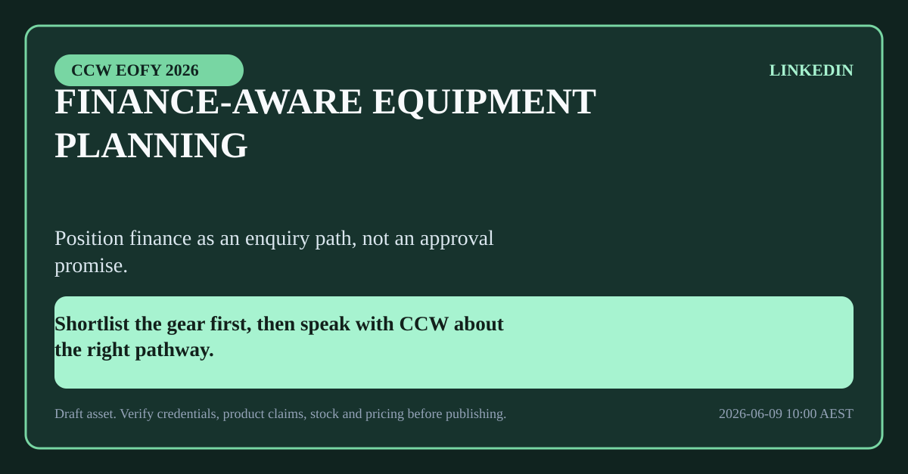
Finance-aware equipment planning
Linkedin 2026-06-09 10:00 AEST
The strongest EOFY equipment plan starts with operational need, then checks stock, pricing, and finance options. CCW points customers to Equipped Commercial Finance for equipment finance discussions across rental, lease, and chattel mortgage options.
Shortlist the gear first, then speak with CCW about the right pathway.
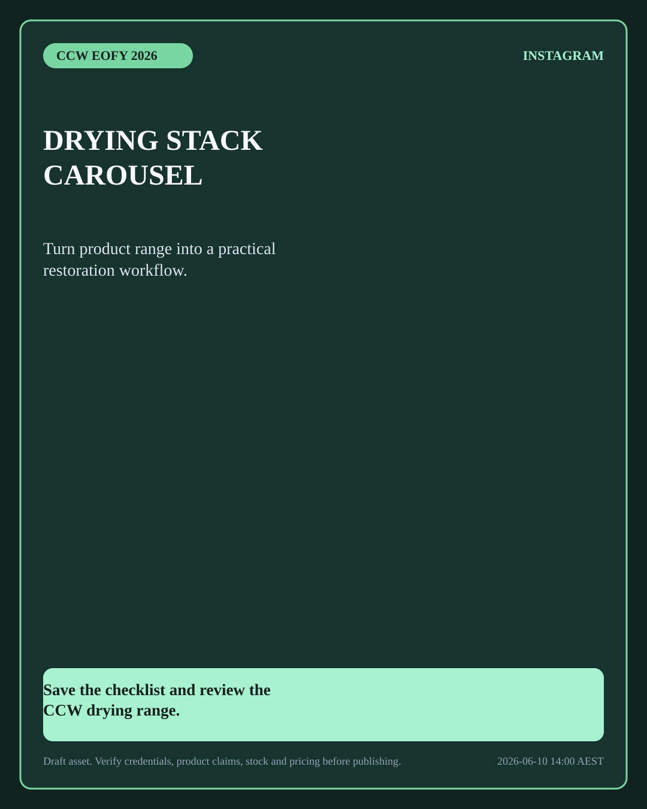
Drying stack carousel
Instagram 2026-06-10 14:00 AEST
A stronger drying stack is not just more fans. Think extraction, air movement, moisture readings, layout, and backup gear. EOFY is a good time to remove the weak link before the next urgent job.
Save the checklist and review the CCW drying range.
Dry Air Gale Force spotlight
Facebook 2026-06-11 16:00 AEST
If drying jobs are stretching your crew, air movement belongs on the EOFY shortlist. CCW lists the Dry Air Technology Gale Force Axial Air Mover with two speeds, stackable storage, low amp draw, and daisy-chain capability.
Check the Dry Air Gale Force details with CCW.
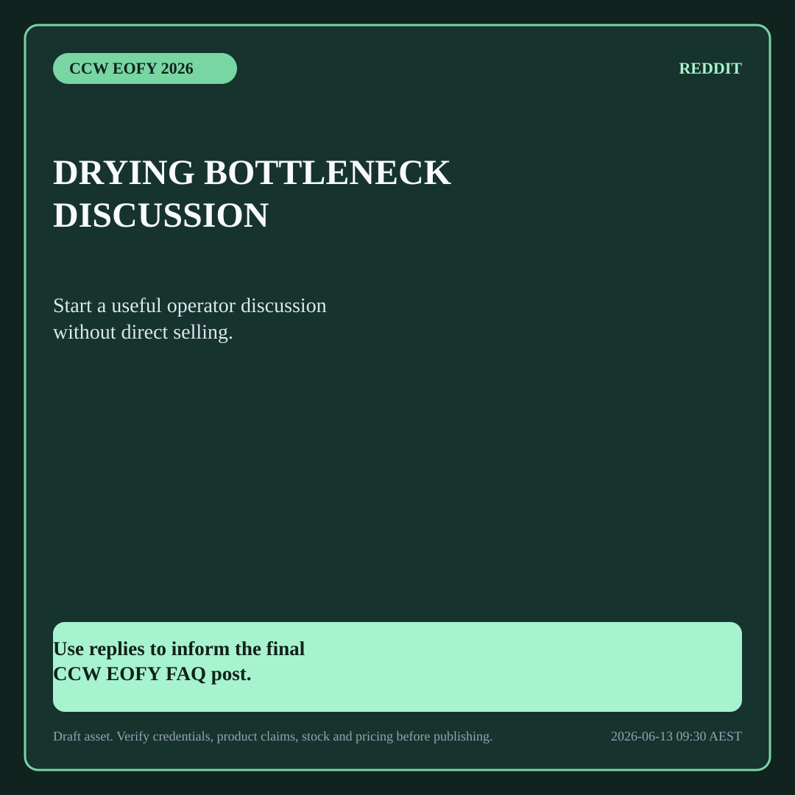
Drying bottleneck discussion
Reddit 2026-06-13 09:30 AEST
Question for restoration operators doing EOFY planning: where do drying jobs usually bottleneck for you? Air mover count, layout, moisture readings, dehumidification, access, or backup gear? The useful spend is usually the item that removes the most repeat friction.
Use replies to inform the final CCW EOFY FAQ post.
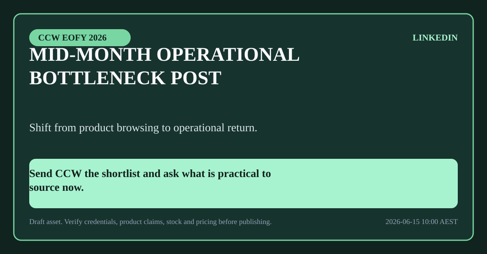
Mid-month operational bottleneck post
Linkedin 2026-06-15 10:00 AEST
The middle of June is the point to turn the EOFY list into decisions. Rank upgrades by job impact: fewer delays, faster setup, cleaner handover, safer backup, and less time lost chasing parts or consumables.
Send CCW the shortlist and ask what is practical to source now.
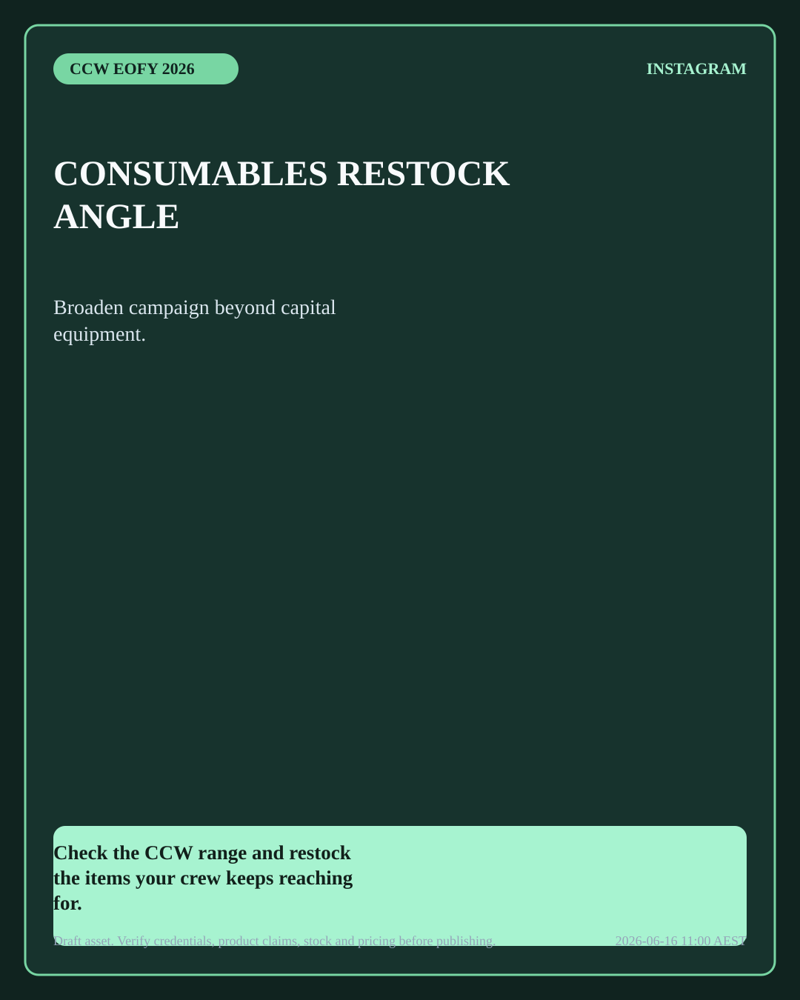
Consumables restock angle
Instagram 2026-06-16 11:00 AEST
EOFY is not only machines. Chemicals, rinses, spotters, deodorisers, hoses, wands, sprayers, and backup parts are the small items that can decide whether a job runs smoothly.
Check the CCW range and restock the items your crew keeps reaching for.
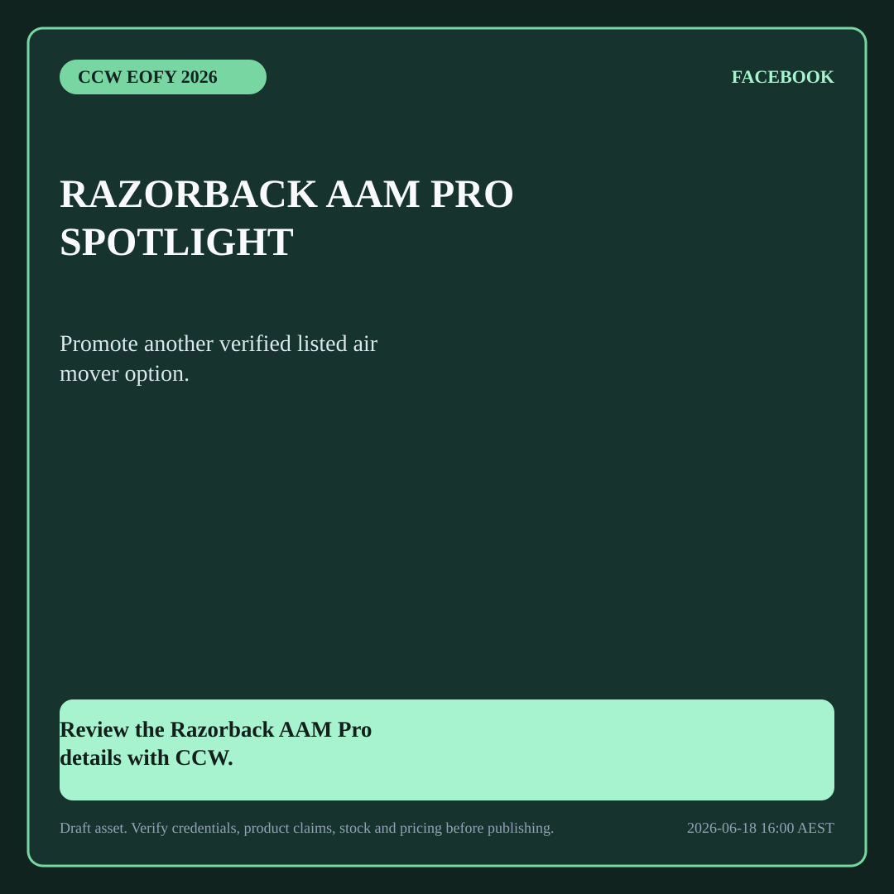
Razorback AAM Pro spotlight
Facebook 2026-06-18 16:00 AEST
For structural drying and clean-water-loss workflows, air mover setup matters. CCW lists the Razorback AAM Pro Axial Air Mover as a current sale item for restoration operators reviewing their drying stack.
Review the Razorback AAM Pro details with CCW.
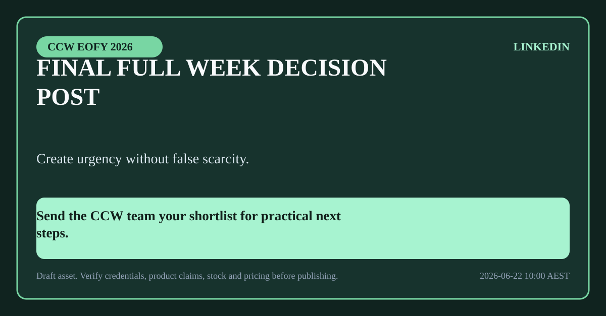
Final full week decision post
Linkedin 2026-06-22 10:00 AEST
The final full week of June is the moment to stop browsing and finalise the shortlist. Confirm the equipment that solves real job bottlenecks, check stock and pricing, and get internal approval before the EOFY rush peaks.
Send the CCW team your shortlist for practical next steps.
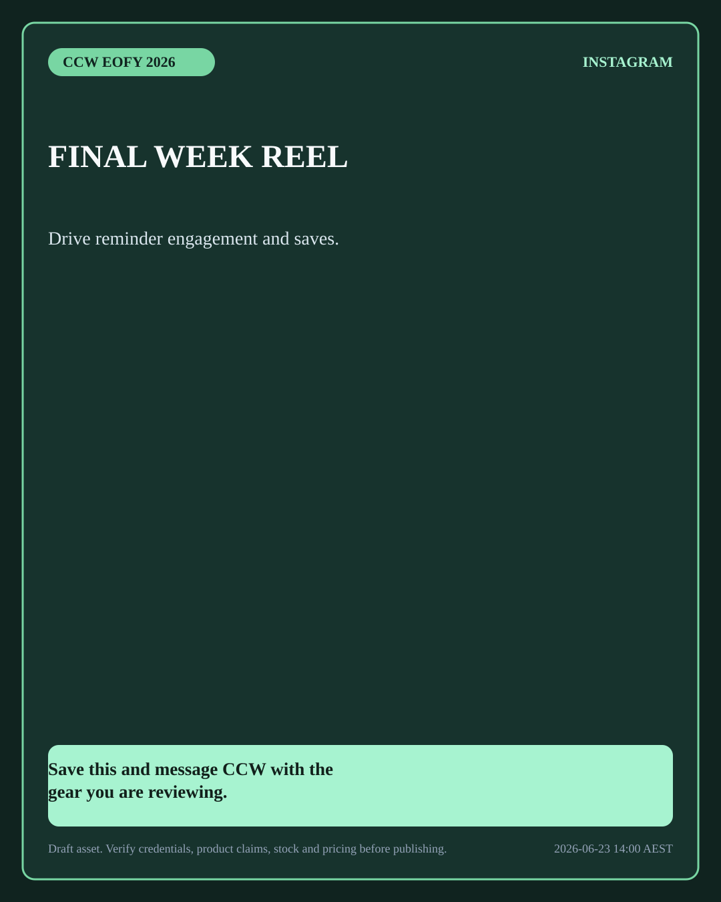
Final week reel
Instagram 2026-06-23 14:00 AEST
Final full week checklist: audit the gear, confirm the weak links, check current pricing, ask about finance pathways, and get the shortlist moving before June closes.
Save this and message CCW with the gear you are reviewing.
Finance enquiry reminder
Facebook 2026-06-24 13:00 AEST
If the shortlist is bigger than this month can comfortably absorb, ask CCW about the finance pathway before leaving the decision too late. Keep the plan practical: gear first, business fit second, finance discussion third.
Talk to CCW about the right next step for your shortlist.
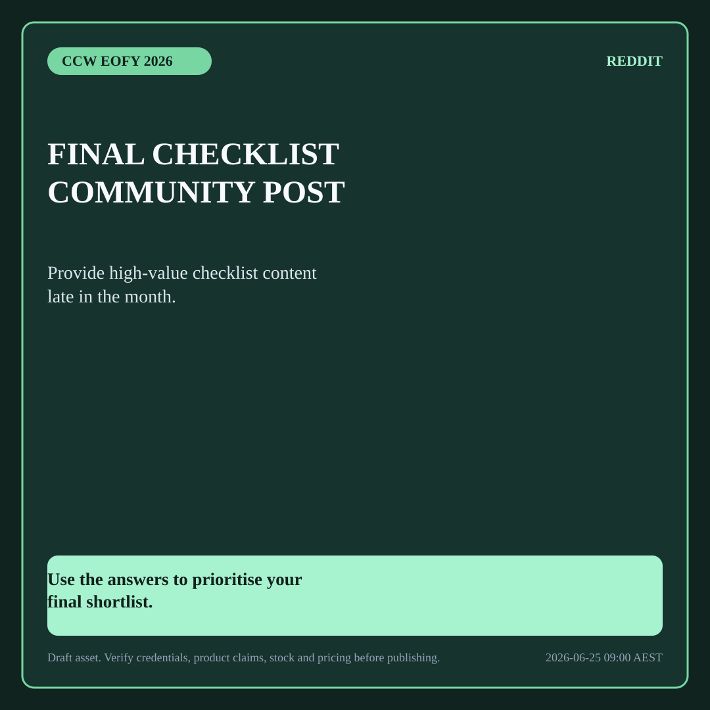
Final checklist community post
Reddit 2026-06-25 09:00 AEST
Final EOFY equipment checklist for cleaning/restoration operators: what item would cause the most pain if it failed next month, what consumable keeps running short, what drying setup bottleneck repeats, and what purchase needs stock or finance confirmation before it is realistic?
Use the answers to prioritise your final shortlist.
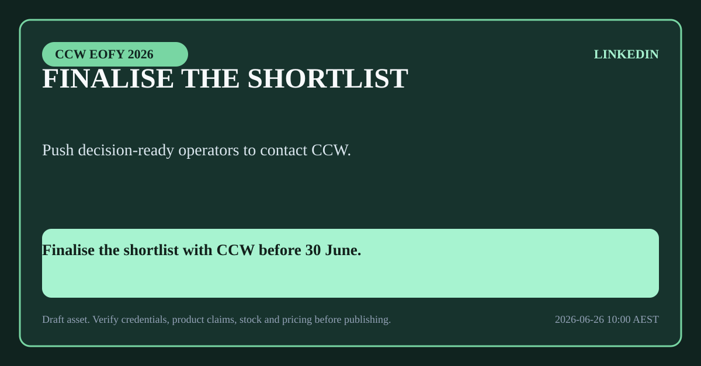
Finalise the shortlist
Linkedin 2026-06-26 10:00 AEST
The best EOFY equipment decision is the one tied to a repeat operational problem. If a machine, air mover, meter, hose, chemical, or accessory removes a known bottleneck, now is the time to confirm the details with CCW.
Finalise the shortlist with CCW before 30 June.
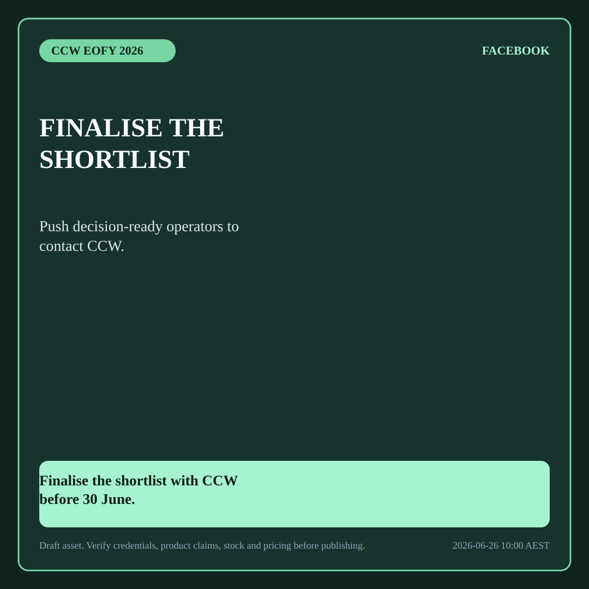
Finalise the shortlist
Facebook 2026-06-26 10:00 AEST
The best EOFY equipment decision is the one tied to a repeat operational problem. If a machine, air mover, meter, hose, chemical, or accessory removes a known bottleneck, now is the time to confirm the details with CCW.
Finalise the shortlist with CCW before 30 June.
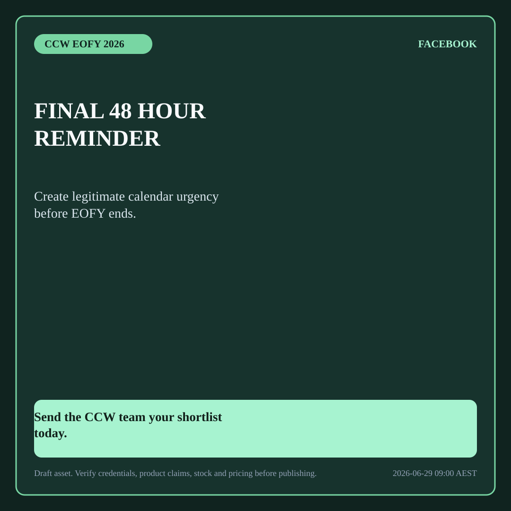
Final 48 hour reminder
Facebook 2026-06-29 09:00 AEST
EOFY closes tomorrow. If your shortlist is still sitting in a note, send it through and confirm what is practical now. Focus on the gear that removes friction from real jobs.
Send the CCW team your shortlist today.
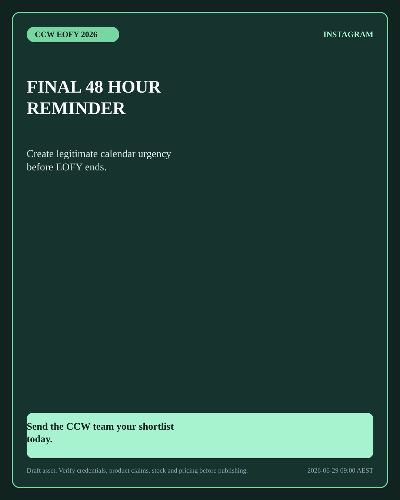
Final 48 hour reminder
Instagram 2026-06-29 09:00 AEST
EOFY closes tomorrow. If your shortlist is still sitting in a note, send it through and confirm what is practical now. Focus on the gear that removes friction from real jobs.
Send the CCW team your shortlist today.
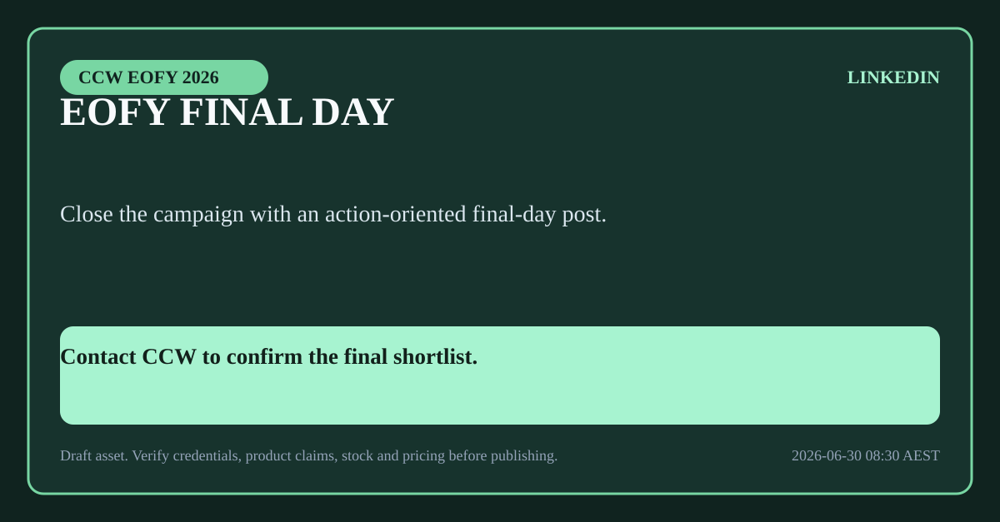
EOFY final day
Linkedin 2026-06-30 08:30 AEST
Final day of EOFY. If an upgrade is already justified by the jobs you do every week, use today to confirm the details with CCW. Keep it practical, sourced, and tied to operational need.
Contact CCW to confirm the final shortlist.
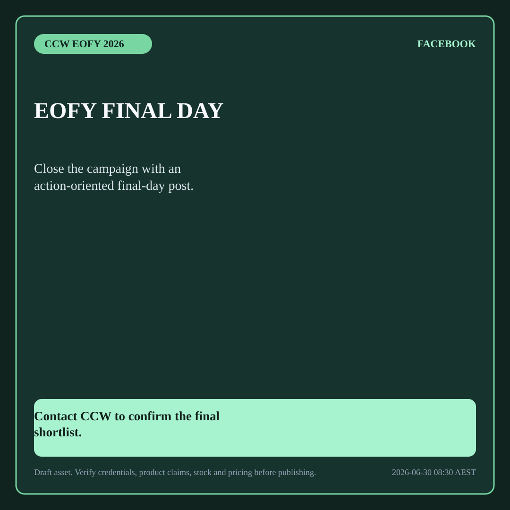
EOFY final day
Facebook 2026-06-30 08:30 AEST
Final day of EOFY. If an upgrade is already justified by the jobs you do every week, use today to confirm the details with CCW. Keep it practical, sourced, and tied to operational need.
Contact CCW to confirm the final shortlist.
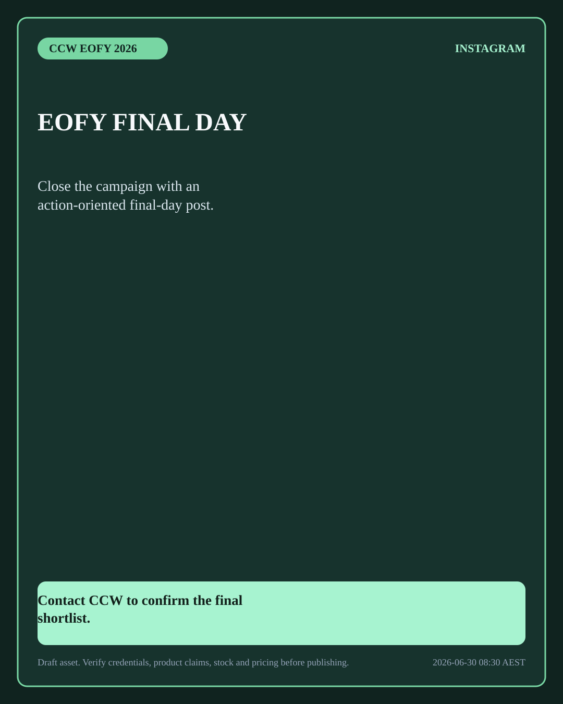
EOFY final day
Instagram 2026-06-30 08:30 AEST
Final day of EOFY. If an upgrade is already justified by the jobs you do every week, use today to confirm the details with CCW. Keep it practical, sourced, and tied to operational need.
Contact CCW to confirm the final shortlist.